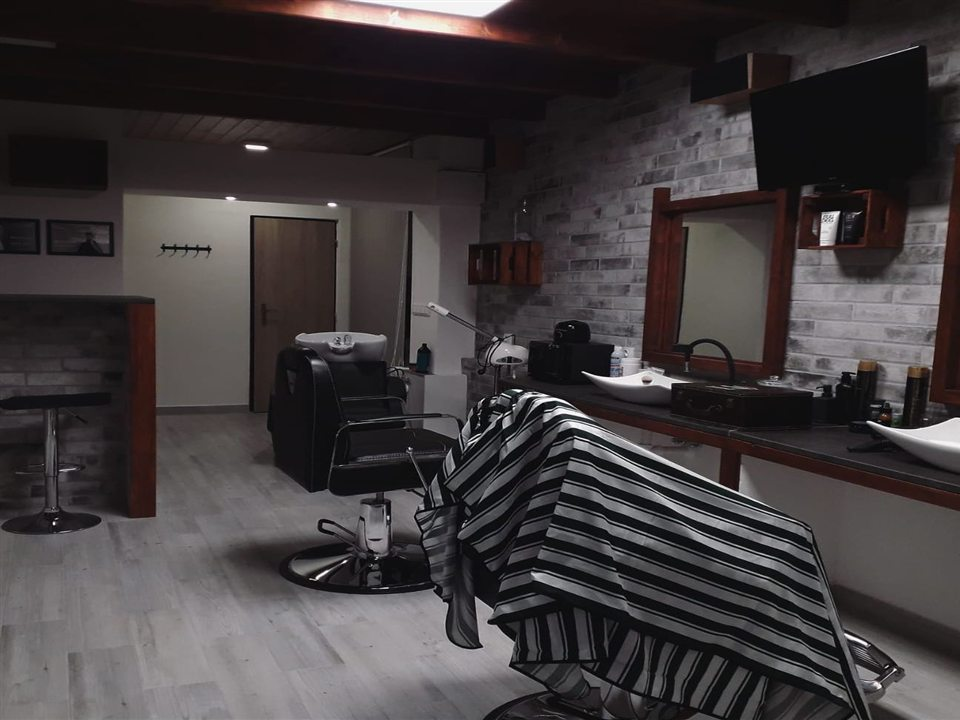

Web design · responsive · SEO
Jeden jasný cíl: rezervace.
Web obsahuje prezentaci značky, nabídku služeb, transparentní ceník, tým, recenze, otevírací dobu, mapu a kontaktní údaje. Vše je navržené tak, aby návštěvník rychle našel důvod přijít a snadno si rezervoval termín.